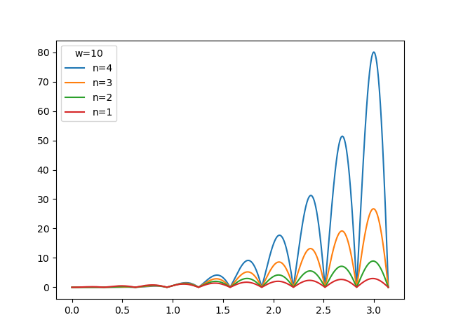
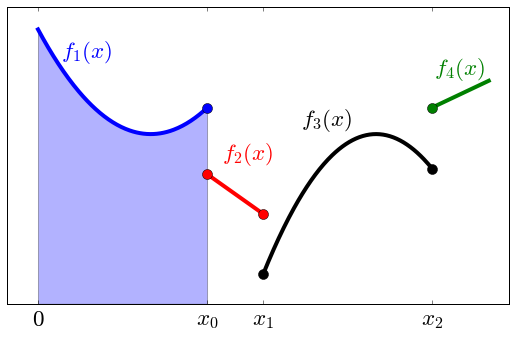
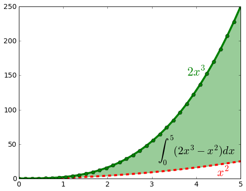
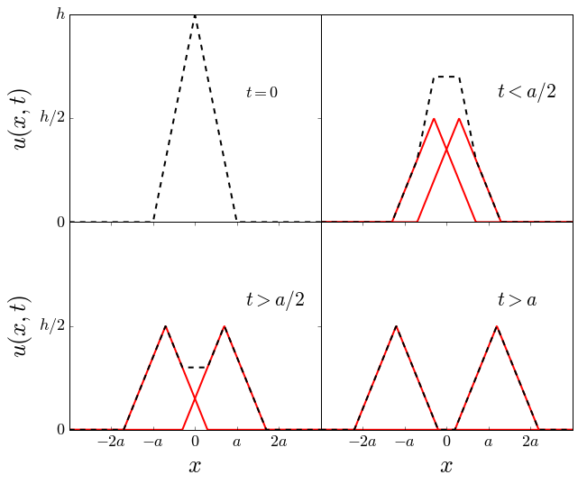
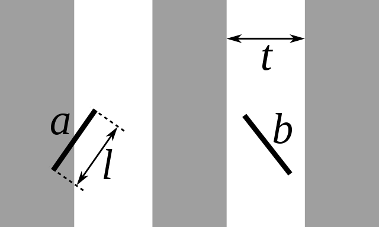

Ejercicios
Ejercicios de Clase 01
Abra una terminal (consola) o notebook y utilícela como una calculadora para realizar las siguientes acciones:
Suponiendo que, de las cuatro horas de clases, tomamos dos descansos de 15 minutos cada uno y nos distraemos otros 13 minutos, calcular cuántos minutos efectivos de trabajo tendremos en las 16 clases.
Para la cantidad de alumnos presentes en el aula: ¿cuántas horas-persona de trabajo hay involucradas en este curso?
Muestre en la consola de Ipython:
el nombre de su directorio actual
los archivos en su directorio actual
Cree un subdirectorio llamado
tmpsi está usando linux, muestre la fecha y hora
Borre el subdirectorio
tmp
Para cubos de lados de longitud L = 1, 3, 5 y 8, calcule su superficie y su volumen.
Para esferas de radios r = 1, 3, 5 y 8, calcule su superficie y su volumen.
Fíjese si alguno de los valores de \(x=2.05\), \(x=2.11\), \(x=2.21\) es un cero de la función \(f(x)=x^{2} + x/4 - 1/2\).
Para el número complejo \(z= 1 + 0.5 i\)
Calcular \(z^2, z^3, z^4, z^5.\)
Calcular los complejos conjugados de \(z\), \(z^2\) y \(z^3\).
Escribir un programa, utilizando formato de strings, que escriba las frases:
“El conjugado de z=1+0.5i es 1-0.5j”
“El conjugado de z=(1+0.5i)^2 es …” (con el valor correspondiente)
Ejercicios de Clase 02
Centrado manual de frases
Utilizando la función
len()centre una frase corta en una pantalla de 80 caracteres. Utilice la frase: “Primer ejercicio con caracteres”Agregue subrayado a la frase anterior
PARA ENTREGAR. Para la cadena de caracteres:
s = '''Aquí me pongo a cantar
Al compás de la vigüela,
Que el hombre que lo desvela
Una pena estraordinaria
Como la ave solitaria
Con el cantar se consuela.'''
Cuente la cantidad de veces que aparecen los substrings
es,la,que,co, en los siguientes dos casos: distinguiendo entre mayúsculas y minúsculas, y no distinguiendo. Imprima el resultado.Cree una lista, donde cada elemento es una línea del string
sy encuentre la de mayor longitud. Imprima por pantalla la línea y su longitud. (Posibles ayudas: busque información sobre funciones que aplican a strings y los métodos)Forme un nuevo string de 10 caracteres que contenga los 5 primeros y los 5 últimos del string anterior
s. Imprima por pantalla el nuevo string.Forme un nuevo string que contenga los 10 caracteres centrales de
s(utilizando un método que pueda aplicarse a otros strings también). Imprima por pantalla el nuevo string.Cambie todas las letras “m” por “n” y todas las letras “n” por “m” en
s. Imprima el resultado por pantalla.Debe entregar un programa llamado
02_SuApellido.py(con su apellido, no la palabra “SuApellido”) por correo electrónico. El programa al correrlo con el comandopython3 02_SuApellido.pydebe imprimir:
Nombre Apellido
Clase 2
Distinguiendo: 2 5 1 2
Sin distinguir: 2 5 2 4
Que el hombre que lo desvela : longitud=28
Aquí uela.
desvela
Un
Aquí ne pomgo a camtar
Al conpás de la vigüela,
Que el honbre que lo desvela
Uma pema estraordimaria
Cono la ave solitaria
Com el camtar se comsuela.
Manejos de listas:
Cree la lista N de longitud 50, donde cada elemento es un número entero de 1 a 50 inclusive (Ayuda: vea la expresión
range).Invierta la lista.
Extraiga una lista N2 que contenga sólo los elementos pares de N.
Extraiga una lista N3 que contenga sólo aquellos elementos que sean el cuadrado de algún número entero.
Cree una lista de la forma
L = [1,3,5,...,17,19,19,17,...,3,1]Operación “rara” sobre una lista:
Defina la lista
L = [0,1]Realice la operación
L.append(L)Ahora imprima L, e imprima el último elemento de
L.Haga que una nueva lista
L1tenga el valor del último elemento deLy repita el inciso anterior.
Utilizando funciones y métodos de strings en la cadena de caracteres:
s1='En un lugar de la Mancha de cuyo nombre no quiero acordarme'
Obtenga la cantidad de caracteres.
Imprima la frase anterior pero con cada palabra empezando en mayúsculas.
- Cuente cuantas letras ‘a’ tiene la frase, ¿cuántas vocales tiene?
Imprima el string
s1centrado en una línea de 80 caracteres, rodeado de guiones en la forma:———-En un lugar de la Mancha de cuyo nombre no quiero acordarme———–
Obtenga una lista L1 donde cada elemento sea una palabra de la oración.
Cuente la cantidad de palabras en
s1(utilizando python).Ordene la lista L1 en orden alfabético.
Ordene la lista L1 tal que las palabras más cortas estén primero.
Ordene la lista L1 tal que las palabras más largas estén primero.
Construya un string s2 con la lista del resultado del punto anterior.
Encuentre la palabra más larga y la más corta de la frase.
Escriba un script que encuentre las raíces de la ecuación cuadrática \(a x^{2} + bx +c = 0\). Los valores de los parámetros defínalos en el mismo script, un poco más arriba.
Considere un polígono regular de \(N\) lados inscripto en un círculo de radio unidad:
Calcule el ángulo interior del polígono regular de \(N\) lados (por ejemplo el de un triángulo es 60 grados, de un cuadrado es 90 grados, y de un pentágono es 108 grados). Exprese el resultado en grados y en radianes para valores de \(N= 3, 5, 6, 8, 9, 10, 12\).
¿Puede calcular la longitud del lado de los polígonos regulares si se encuentran inscriptos en un círculo de radio unidad?
Escriba un script (llamado distancia1.py) que defina las variables velocidad y posición inicial \(v_{0}\), \(z_{0}\), la aceleración \(g\), y la masa \(m=1\) kg a tiempo \(t=0\), y calcule e imprima la posición y velocidad a un tiempo posterior \(t\). Ejecute el programa para varios valores de posición y velocidad inicial para \(t=2\) segundos. Recuerde que las ecuaciones de movimiento con aceleración constante son:
\[\begin{split}v = v_0 - g t \\ z = z_0 + v_0 t - g t^2/2.\end{split}\]
Adicionales
Calcular la suma:
\[s_{1} = \frac{1}{2} \left(\sum_{k=0}^{100}k \right)^{-1}\]Ayuda: busque información sobre la función
sum()Construir una lista
L2con 2000 elementos, todos iguales a0.0005. Imprimir su suma utilizando la funciónsumy comparar con el resultado que arroja la función que existe en el módulomathpara realizar suma de números de punto flotante.
Ejercicios de Clase 03
De los primeros 100 números naturales imprimir aquellos que no son divisibles por alguno de 2, 3, 5 o 7.
Usando estructuras de control, calcule la suma:
\[s_{1} = \frac{1}{2} \left(\sum_{k=1}^{100}k^{-1} \right)\]Incluyendo todos los valores de
kIncluyendo únicamente los valores pares de
k.
Calcule la suma
\[s_{2} = \sum_{k=1}^{\infty} \frac{(-1)^{k} (k+1)}{2 k^{3} + k^{2}}\]con un error relativo estimado menor a \(\epsilon=10^{-5}\). Imprima por pantalla el resultado, el valor máximo de \(k\) computado y el error relativo estimado.
Imprima por pantalla una tabla con valores equiespaciados de x entre 0 y 180, con valores de las funciones trigonométricas de la forma:
"""
|=================================|
| x | sen(x) | cos(x) | tan(-x/4)|
|=================================|
| 0 | 0.000 | 1.000 | -0.000 |
| 10 | 0.174 | 0.985 | -0.044 |
| 20 | 0.342 | 0.940 | -0.087 |
| 30 | 0.500 | 0.866 | -0.132 |
| 40 | 0.643 | 0.766 | -0.176 |
| 50 | 0.766 | 0.643 | -0.222 |
| 60 | 0.866 | 0.500 | -0.268 |
| 70 | 0.940 | 0.342 | -0.315 |
| 80 | 0.985 | 0.174 | -0.364 |
| 90 | 1.000 | 0.000 | -0.414 |
|100 | 0.985 | -0.174 | -0.466 |
|110 | 0.940 | -0.342 | -0.521 |
|120 | 0.866 | -0.500 | -0.577 |
|130 | 0.766 | -0.643 | -0.637 |
|140 | 0.643 | -0.766 | -0.700 |
|150 | 0.500 | -0.866 | -0.767 |
|160 | 0.342 | -0.940 | -0.839 |
|170 | 0.174 | -0.985 | -0.916 |
|=================================|
"""
Un método para calcular el área de un polígono (no necesariamente regular) que se conoce como fórmula del área de Gauss o fórmula de la Lazada (shoelace formula) consiste en describir al polígono por sus puntos en un sistema de coordenadas. Cada punto se describe como un par \((x,y)\) y la fórmula del área está dada mediante la suma de la multiplicación de los valores en una diagonal a los que se le resta los valores en la otra diagonal, como muestra la figura


Utilizando una descripción adecuada del polígono, implementar la fórmula de Gauss para calcular su área y aplicarla al ejemplo de la figura.
Verificar que el resultado no depende del punto de inicio.
Las funciones de Bessel de orden \(n\) cumplen las relaciones de recurrencia
\[\begin{split}J_{n -1}(x)- \frac{2n }{x}\, J_{n }(x) + J_{n +1}(x) = 0 \\ J^{2}_{0}(x) + \sum_{n=1}^{\infty} 2 J^{2}_{n}(x) = 1\end{split}\]
Para calcular la función de Bessel de orden \(N\), se empieza con un valor de \(M \gg N\), y utilizando los valores iniciales \(J_{M}=1\), \(J_{M+1}=0\) se utiliza la primera relación para calcular todos los valores de \(n < M\). Luego, utilizando la segunda relación se normalizan todos los valores.
Nota
Estas relaciones son válidas si \(M \gg x\) (use algún valor estimado, como por ejemplo \(M=N+20\)).
Utilice estas relaciones para calcular \(J_{N}(x)\) para \(N=3,4,7\) y \(x=2.5, 5.7, 10\). Para referencia se dan los valores esperados
Dada una lista de números, vamos a calcular valores relacionados a su estadística.
Calcular los valores de la media aritmética, la media geométrica y la media armónica, dados por:
\[\begin{split}A(x_1, \ldots, x_n) = \bar{x} = \frac{x_1 + \cdots + x_n}{n} \\ G(x_1, \ldots, x_n) = \sqrt[n]{x_1 \cdots x_n} \\ H(x_1, \ldots, x_n) = \frac{n}{\frac{1}{x_1} + \cdots + \frac{1}{x_n}}\end{split}\]Calcular la desviación estándard:
\[\sigma\equiv\sqrt{\frac{1}{n}\sum_i \left(x_{i} - \bar{x} \right)^2}\]Calcular la mediana, que se define como el valor para el cual la mitad de los valores de la lista es menor que ella. Si el número de elementos es par, se toma el promedio entre los dos adyacentes.
Realizar los cálculos para las listas de números:
L1 = [6.41, 1.28, 11.54, 5.13, 8.97, 3.84, 10.26, 14.1, 12.82, 16.67, 2.56, 17.95, 7.69, 15.39] L2 = [4.79, 1.59, 2.13, 4.26, 3.72, 1.06, 6.92, 3.19, 5.32, 2.66, 5.85, 6.39, 0.53]
La moda se define como el valor que ocurre más frecuentemente en una colección. Note que la moda puede no ser única. En ese caso debe obtener todos los valores. Calcule la moda de la siguiente lista de números enteros:
L = [8, 9, 10, 11, 10, 6, 10, 17, 8, 8, 5, 10, 14, 7, 9, 12, 8, 17, 10, 12, 9, 11, 9, 12, 11, 11, 6, 9, 12, 5, 12, 9, 10, 16, 8, 4, 5, 8, 11, 12]
Dada una lista de direcciones en el plano, expresadas por los ángulos en grados a partir de un cierto eje, calcular la dirección promedio, expresada en ángulos. Pruebe su algoritmo con las listas:
t1 = [0, 180, 370, 10] t2 = [30, 0, 80, 180] t3 = [80, 180, 540, 280]
Ejercicios de Clase 04
Escriba una función que tome como un argumento una cadena de caracteres (string) y lo devuelva centrado con un ancho
w. Si la longitud del string es mayor que el anchowdebe retornar el string original. Los argumentos que toma la función son el string y el ancho.Utilizando conjuntos (
set), escriba una función que compruebe si un string contiene todas las vocales. La función debe devolverTrueoFalse.Escriba funciones para analizar la divisibilidad de enteros:
La función
es_divisible1(x)que retorna verdadero si x es divisible por alguno de2,3,5,7o falso en caso contrario.La función
es_divisible_por_listaque cumple la misma función quees_divisible1pero recibe dos argumentos: el enteroxy una variable del tipo lista que contiene los valores para los cuáles debemos examinar la divisibilidad. Las siguientes expresiones deben retornar el mismo valor:
es_divisible1(x) es_divisible_por_lista(x, [2,3,5,7]) es_divisible_por_lista(x)
La función
es_divisible_porcuyo primer argumento (mandatorio) esx, y luego puede aceptar un número indeterminado de argumentos:
es_divisible_por(x) # retorna verdadero siempre es_divisible_por(x, 2) # verdadero si x es par es_divisible_por(x, 2, 3, 5, 7) # igual resultado que es_divisible1(x) e igual a es_divisible_por_lista(x) es_divisible_por(x, 2, 3, 5, 7, 9, 11, 13) # o cualquier secuencia de argumentos debe funcionar
Escriba una función
crear_sen(A, w)que acepte dos números reales \(A, w\) como argumentos y devuelva la funciónf(x).
Al evaluar la función f en un dado valor \(x\) debe dar el
resultado: \(f(x) = A \sin(w x)\) tal que se pueda utilizar de la
siguiente manera:
f = crear_sen(3, 1.5)
f(2) # Debería imprimir el resultado de 3*sin(1.5*2)=0.4233600241796016
Escriba una serie de funciones que permitan trabajar con polinomios. Vamos a representar a un polinomio como una lista de números reales, donde cada elemento corresponde a un coeficiente que acompaña una potencia
Una función que devuelva el orden del polinomio (un número entero)
Una función que sume dos polinomios y devuelva un polinomio (objeto del mismo tipo)
Una función que multiplique dos polinomios y devuelva el resultado en otro polinomio
Una función devuelva la derivada del polinomio (otro polinomio).
Una función que acepte el polinomio y devuelva la función correspondiente.
PARA ENTREGAR. Describimos una grilla de sudoku como un string de nueve líneas, cada una con 9 números, con números entre 1 y 9. Escribir un conjunto de funciones que permitan chequear si una grilla de sudoku es correcta. Para que una grilla sea correcta deben cumplirse las siguientes condiciones
Los números están entre 1 y 9
En cada fila no deben repetirse
En cada columna no deben repetirse
En todas las regiones de 3x3 que no se solapan, empezando de cualquier esquina, no deben repetirse
Escribir una función que convierta un string con formato a una lista bidimensional. El string estará dado con nueve números por línea, de la siguiente manera (los espacios en blanco en cada línea pueden variar):
sudoku = """145327698 839654127 672918543 496185372 218473956 753296481 367542819 984761235 521839764"""
Escribir una función
check_repetidos()que tome por argumento una lista (unidimensional) y devuelva verdadero si la lista tiene elementos repetidos y falso en caso contrario (puede ser conveniente explorar el uso deset).Escribir la función
check_sudoku()que toma como argumento una grilla (como una lista bidimensional de9x9) y devuelva verdadero si los números corresponden a la resolución correcta del Sudoku y falso en caso contrario. Note que debe verificar que los números no se repiten en filas, ni en columnas ni en recuadros de3x3. Para obtener la posición de los recuadros, puede investigar que hacen las líneas de código:
j, k = (i // 3) * 3, (i % 3) * 3 r = [grid[a][b] for a in range(j, j+3) for b in range(k, k+3)]
suponiendo que
grides el nombre de nuestra lista bidimensional, cuandoitoma valores entre0y8.
Ejercicios de Clase 05
Realice un programa que:
Lea el archivo names.txt
Guarde en un nuevo archivo (llamado “pares.txt”) palabra por medio del archivo original (la primera, tercera, …) una por línea, pero en el orden inverso al leído
Agregue al final de dicho archivo, las palabras pares pero separadas por un punto y coma (;)
En un archivo llamado “longitudes.txt” guarde las palabras ordenadas por su longitud, y para cada longitud ordenadas alfabéticamente.
En un archivo llamado “letras.txt” guarde sólo aquellas palabras que contienen las letras
w,x,y,z, con el formato:w: Walter, ….
x: Xilofón, …
y: ….
z: ….
Cree un diccionario, donde cada key es la primera letra y cada valor es una lista, cuyo elemento es una tuple (palabra, longitud). Por ejemplo:
d['a'] = [('Aaa',3),('Anna', 4), ...]
Realice un programa para:
Leer los datos del archivo aluminio.dat y poner los datos del elemento en un diccionario de la forma:
d = {'S': 'Al', 'Z':13, 'A':27, 'M': '26.98153863(12)', 'P': 1.0000, 'MS':'26.9815386(8)'}
Modifique el programa anterior para que las masas sean números (
float) y descarte el valor de la incerteza (el número entre paréntesis)Agregue el código necesario para obtener una impresión de la forma:
Elemento: Al Número Atómico: 13 Número de Masa: 27 Masa: 26.98154
Note que la masa sólo debe contener 5 números decimales
Ejercicios de Clase 06
Implemente los métodos
__add__,productoyabs__add__()debe retornar un objeto del tipoVectory contener en cada componente la suma de las componentes de los dos vectores que toma como argumento.productotoma como argumentos dos vectores y retorna un número real con el valor del producto internoabstoma como argumentos el propio objeto y retorna el número real correspondiente
Su uso será el siguiente:
v1 = Vector(1,2,3) v2 = Vector(3,2,1) v = v1 + v2 pr = v1.producto(v2) a = v1.abs()
Utilizando la definición de la clase
Punto
class Punto:
"Clase para describir un punto en el espacio"
num_puntos = 0
def __init__(self, x=0, y=0, z=0):
"Inicializa un punto en el espacio"
self.x = x
self.y = y
self.z = z
Punto.num_puntos += 1
return None
def __del__(self):
"Borra el punto y actualiza el contador"
Punto.num_puntos -= 1
def __str__(self):
return f"Punto en el espacio con coordenadas: x = {self.x}, y = {self.y}, z = {self.z}"
def __repr__(self):
return f"Punto(x = {self.x}, y = {self.y}, z = {self.z})"
def __call__(self):
return self.__str__()
@classmethod
def total(cls):
"Imprime el número total de puntos"
print(f"En total hay {cls.num_puntos} puntos definidos")
Complete la implementación de la clase Vector con los métodos
pedidos
class Vector(Punto):
"Representa un vector en el espacio"
def __add__(self, v2):
"Calcula un vector que contiene la suma de dos vectores"
print("Aún no implementada la suma de dos vectores")
# código calculando v = suma de self + v2
# ...
def __mul__(self, v2):
"Calcula el producto interno entre dos vectores"
print("Aún no implementado el producto interno de dos vectores")
# código calculando el producto interno pr = v1 . v2
def abs(self):
"Devuelve la distancia del punto al origen"
print("Aún no implementado la norma del vector")
# código calculando la magnitud del vector
def angulo_entre_vectores(self, v2):
"Calcula el ángulo entre dos vectores"
print("Aún no implementado el ángulo entre dos vectores")
angulo = 0
# código calculando angulo = arccos(v1 * v2 / (|v1||v2|))
return angulo
def coordenadas_cilindricas(self):
"Devuelve las coordenadas cilindricas del vector como una tupla (r, theta, z)"
print("No implementada")
def coordenadas_esfericas(self):
"Devuelve las coordenadas esféricas del vector como una tupla (r, theta, phi)"
print("No implementada")
PARA ENTREGAR: Cree una clase
Polinomiopara representar polinomios. La clase debe guardar los datos representando todos los coeficientes. El grado del polinomio será menor o igual a 9 (un dígito).Nota
Utilice el archivo 06_polinomio.py en el directorio data, que renombrará de la forma usual
06_Apellido.py. Se le pide que programe:
Un método de inicialización
__init__que acepte una lista de coeficientes. Por ejemplo para el polinomio \(4 x^3 + 3 x^2 + 2 x + 1\) usaríamos:
>>> p = Polinomio([1,2,3,4])
Un método
gradoque devuelva el orden del polinomio
>>> p = Polinomio([1,2,3,4])
>>> p.grado()
3
Un método
get_coeficientes, que devuelva una lista con los coeficientes:
>>> p.get_coeficientes()
[1, 2, 3, 4]
Un método
set_coeficientes, que fije los coeficientes de la lista:
>>> p1 = Polinomio()
>>> p1.get_coeficientes()
[]
>>> p1.set_coeficientes([1, 2, 3, 4])
>>> p1.get_coeficientes()
[1, 2, 3, 4]
El método
suma_pol(pol2)que le sume otro polinomio y devuelva un polinomio (objeto del mismo tipo)El método
mul(pol2)que multiplica al polinomio por una constante y devuelve un nuevo polinomioUn método,
derivada(n), que devuelva la derivada de ordenndel polinomio (otro polinomio):
>>> p1 = p.derivada()
>>> p1.get_coeficientes()
[2, 6, 12]
>>> p2 = p.derivada(n=2)
>>> p2.get_coeficientes()
[6, 24]
Un método que devuelva la integral (antiderivada) del polinomio de orden
n, con constante de integracióncte(otro polinomio).
>>> p1 = p.integrada()
>>> p1.get_coeficientes()
[0, 1, 1, 1, 1]
>>>
>>> p2 = p.integrada(cte=2)
>>> p2.get_coeficientes()
[2, 1, 1, 1, 1]
>>>
>>> p3 = p.integrada(n=3, cte=1.5)
>>> p3.get_coeficientes()
[1.5, 1.5, 0.75, 0.16666666666666666, 0.08333333333333333, 0.05]
Un método
from_string(expr)(pida ayuda si se le complica) que crea un polinomio desde un string en la forma:
>>> p = Polinomio()
>>> p.from_string('x^5 + 3x^3 - 2 x+x^2 + 3 - x')
>>> p.get_coeficientes()
[3, -3, 1, 3, 0, 1]
>>>
>>> p1 = Polinomio()
>>> p1.from_string('y^5 + 3y^3 - 2 y + y^2+3', var='y')
>>> p1.get_coeficientes()
[3, -2, 1, 3, 0, 1]
Escriba un método llamado
__str__, que devuelva un string (que define cómo se va a imprimir el polinomio). Un ejemplo de salida será:
>>> p = Polinomio([1,2.1,3,4])
>>> print(p)
4 x^3 + 3 x^2 + 2.1 x + 1
Escriba un método llamado
__call__, de manera tal que al llamar al objeto, evalúe el polinomio en un dado valor dex
>>> p = Polinomio([1,2,3,4])
>>> p(x=2)
49
>>>
>>> p(0.5)
3.25
Escriba un método llamado
__add__(self, p), que evalúe la suma de polinomios usando el métodosuma_poldefinido anteriormente. Eso permitirá usar la operación de suma en la forma:
>>> p1 = Polinomio([1,2,3,4])
>>> p2 = Polinomio([1,2,3,4])
>>> p1 + p2
Escriba los métodos llamados
__mul__(self, value)y__rmul__(self, value), que devuelvan el producto de un polinomio por un valor constante, llamando al métodomuldefinido anteriormente. Eso permitirá usar la operación producto en la forma:
>>> p1 = Polinomio([1,2,3,4])
>>> k = 3.5
>>> p1 * k
>>> k * p1
Ejercicios de Clase 07
Git
Además de la clase, puede también que se hayan perdido algunos cuentos de Borges en el directorio. Sus objetivos son
Encontrar alguno de esos cuentos.
Leerlo, si no tuvo la chance alguna vez de hacerlo.
Reportar en el repositorio de GitHub que el nombre del cuento, el personaje principal, y cuál es su opinión sobre el mismo, a través de un issue. Para ello tendría que crearse una cuenta en GitHub, ir al buscar el repositorio
fcolavecchia/standard_library_python.git, seleccionar Issues y luego crear un nuevo issue con el botónNew issue.
RegEx
Una manera de representar un sudoku es a través de un
stringde exactamente 81 caracteres. Si el sudoku ha sido resuelto, ese string contendrá sólo los números que resuelven el sudoku. Sin embargo, si el sudoku no está resuelto, se representan los casilleros vacíos por el caracter.. Por ejemplo:
sudoku_facil = "....71............1346.......3.17....27.8..4.5..24.........3.7..4..2...1.61.58.3."
sería una representación válida de un sudoku.
Usando expresiones regulares, encuentre los sudokus perdidos en el directorio de archivos corruptos usado antes.
Más RegEx
Si todavía tiene ganas de seguir practicando regex, un ejercicio interesante es encontrar los coeficientes y las potencias de un polinomio que viene descripto como un string:
polinomio = "5x^4 + 3x^2 - 2x + 7"
Este no es un ejercicio fácil, y además, para extraer la información requerida, es necesario poder capturar grupos de expresiones regulares.
Ejercicios de Clase 08
Genere arrays en 2d, cada uno de tamaño 10x10 con:
Un array con valores 1 en la “diagonal principal” y 0 en el resto (Matriz identidad).
Un array con valores 0 en la “diagonal principal” y 1 en el resto.
Un array con valores 1 en los bordes y 0 en el interior.
Un array con números enteros consecutivos (empezando en 1) en los bordes y 0 en el interior.
Diga qué resultado produce el siguiente código, y explíquelo
# Ejemplo propuesto por Jake VanderPlas
print(sum(range(5),-1))
from numpy import *
print(sum(range(5),-1))
Escriba una función
suma_potencias(p, n)(utilizando arrays y Numpy) que calcule la operación\[s_{2} = \sum_{k=0}^{n}k^{p}\].
Usando las funciones de numpy
signymaximumdefinir las siguientes funciones, que acepten como argumento un array y devuelvan un array con el mismo shape:
función de Heaviside, que vale 1 para valores positivos de su argumento y 0 para valores negativos.
La función escalón, que vale 0 para valores del argumento fuera del intervalo \((-1,1)\) y 1 para argumentos en el intervalo.
La función rampa, que vale 0 para valores negativos de \(x\) y \(x\) para valores positivos.
Ejercicios de Clase 09
Realizar un programa para visualizar la función
\[f(x,n,w) = x^n |\sin(w x)|\]El programa debe realizar el gráfico para \(w=10\), con cuatro curvas para \(n=1,2,3,4\), similar al que se muestra en la siguiente figura
Para la función definida a trozos:
\[\begin{split}f(x) = \begin{cases} f_{1}(x) = x^{2}/8 & - \pi < x \le \pi/2 \\ f_{2}(x) = -0.3 x & \pi/2 < x < \pi \\ f_{3}(x) = -(x - 2 \pi)^{2}/6 & \pi \le x \le 5 \pi/2 \\ f_{4}(x) = (x - 2 \pi)/5 & 5 \pi/2 < x \le 3 \pi \end{cases}\end{split}\]realizar la siguiente figura de la manera más fiel posible.
Pistas: Buscar información sobre
plt.text(),plt.fill_between()y sobreplt.xticksyplt.yticks.Rehacer la siguiente figura:
Notando que la curva en color negro corresponde a la suma de las dos curvas en rojo, rehacer la siguiente figura:
Crear una hoja de estilo que permita hacer gráficos adecuados para posters y presentaciones. Debe modificar los tamaños para hacerlos legibles a mayores distancias (sugerencia 16pt). El tamaño de la letra de los nombres de ejes y en las leyendas debe ser mayor también. Las líneas deben ser más gruesas (sugerencia: ~4), los símbolos de mayor tamaño (sugerencia ~10).
Ejercicios de Clase 10
Dado un array
ade números, creado por ejemplo usando:a = np.random.uniform(size=100)
Encontrar el número más cercano a un número escalar dado (por ejemplo x=0.5). Utilice los métodos discutidos.
Vamos a estudiar la frecuencia de aparición de cada dígito en la serie de Fibonacci, generada siguiendo las reglas:
\[a_{1} = a_{2} = 1, \quad a_{i} = a_{i-1} + a_{i-2}.\]
Se pide:
Crear una función que acepta como argumento un número entero \(N\) y retorna una secuencia (lista, tupla, diccionario o array) con los elementos de la serie de Fibonacci.
Crear una función que devuelva un histograma de ocurrencia de cada uno de los dígitos en el primer lugar del número. Por ejemplo para los primeros 8 valores (\(N=8\)): \(1,1,2,3,5,8,13,21\) tendremos que el \(1\) aparece 3 veces, el \(2\) aparece \(2\) veces, \(3, 5, 8\) una vez. Normalizar los datos dividiendo por el número de valores \(N\).
Utilizando las dos funciones anteriores graficar el histograma para un número \(N\) grande y comparar los resultados con la ley de Benford
\[P(n) = \log_{10}\left(1+ \frac{1}{d} \right).\]PARA ENTREGAR: Estimar el valor de π usando diferentes métodos basados en el método de Monte Carlo:
Crear una función para calcular el valor de \(\pi\) usando el “método de cociente de áreas”. Para ello:
Generar puntos en el plano dentro del cuadrado de lado unidad cuyo lado inferior va de \(x=0\) a \(x=1\)
Contar cuantos puntos caen dentro del (cuarto de) círculo unidad. Este número tiende a ser proporcional al área del círculo
La estimación de \(\pi\) será igual a cuatro veces el cociente de números dentro del círculo dividido por el número total de puntos.
Crear una función para calcular el valor de \(\pi\) usando el “método del valor medio”: Este método se basa en la idea de que el valor medio de una función se puede calcular de la siguiente manera:
\[\langle f \rangle = \frac{1}{b-a} \int_{a}^{b} f(x)\, dx\]Tomando la función particular \(f(x)= \sqrt{1- x^{2}}\) entre \(x=0\) y \(x=1\), obtenemos:
\[\langle f \rangle = \int_{0}^{1} \sqrt{1- x^{2}}\, dx = \frac{\pi}{4}\]Entonces, tenemos que estimar el valor medio de la función \(f\) y, mediante la relación anterior obtener \(\pi = 4 \langle f(x) \rangle\). Para obtener el valor medio de la función notamos que si tomamos \(X\) es una variable aleatoria entre 0 y 1, entonces el valor medio de \(f(X)\) es justamente \(\langle f \rangle\). Su función debe entonces
Generar puntos aleatoriamente en el intervalo \([0,1]\)
Calcular el valor medio de \(f(x)\) para los puntos aleatorios \(x\).
El resultado va a ser igual al valor de la integral, y por lo tanto a \(\pi/4\).
Utilizar las funciones anteriores con diferentes valores para el número total de puntos \(N\). En particular, hacerlo para 20 valores de \(N\) equiespaciados logarítmicamente entre 100 y 10000. Para cada valor de \(N\) calcular la estimación de \(\pi\). Realizar un gráfico con el valor estimado como función del número \(N\) con los dos métodos (dos curvas en un solo gráfico)
Para \(N=15000\) repetir el “experimento” muchas veces (al menos 1000) y realizar un histograma de los valores obtenidos para \(\pi\) con cada método. Graficar el histograma y calcular la desviación standard. Superponer una función Gaussiana con el mismo ancho. El gráfico debe ser similar al siguiente (el estilo de graficación no tiene que ser el mismo)
El método de la aguja del bufón se puede utilizar para estimar el valor de \(\pi\), y consiste en tirar agujas (o palitos, fósforos, etc) al azar sobre una superficie rayada
Por simplicidad vamos a considerar que la distancia entre rayas \(t\) es mayor que la longitud de las agujas \(\ell\)
La probabilidad de que una aguja cruce una línea será:
\[P = \frac{2 \ell}{t\, \pi}\]por lo que podemos calcular el valor de \(\pi\) si estimamos la probabilidad \(P\). Realizar una función que estime \(\pi\) utilizando este método y repetir las comparaciones de los dos puntos anteriores pero ahora utilizando este método y el de las áreas.
Ejercicios de Clase 11
Graficar para valores de \(k=1,2,5,10\) y como función del límite superior \(L\), el valor de la integral:
con rango de variación de \(L\) entre \(0\) y \(2 \pi\).
En el archivo
palabras.words.gzhay una larga lista de palabras, en formato comprimido. Siguiendo la idea del ejemplo dado en clases realizar un histograma de las longitudes de las palabras.Modificar el programa del ejemplo de la clase para calcular el histograma de frecuencia de letras en las palabras (no sólo la primera). Considere el caso insensible a la capitalización: las mayúsculas y minúsculas corresponden a la misma letra (‘á’ es lo mismo que ‘Á’ y ambas corresponden a ‘a’).
Utilizando el mismo archivo de palabras, Guardar todas las palabras en un array y obtener los índices de las palabras que tienen una dada letra (por ejemplo la letra ‘j’), los índices de las palabras con un número dado de letras (por ejemplo 5 letras), y los índices de las palabras cuya tercera letra es una vocal. En cada caso, dar luego las palabras que cumplen dichas condiciones.
En el archivo
colision.npyhay una gran cantidad de datos que corresponden al resultado de una simulación. Los datos están organizados en trece columnas. La primera corresponde a un parámetro, mientras que las 12 restantes corresponde a cada una de las tres componentes de la velocidad de cuatro partículas. Calcular y graficar:la distribución de ocurrencias del primer parámetro.
la distribución de ocurrencias de energías de la tercera partícula.
la distribución de ocurrencias de ángulos de la cuarta partícula, medido respecto al tercer eje.
la distribución de energías de la tercera partícula cuando la cuarta partícula tiene un ángulo menor a 90 grados con el tercer eje.
Realizar los cuatro gráficos utilizando un formato adecuado para presentación (charla o poster).
Leer el archivo
colision.npyy guardar los datos en formato texto con un encabezado adecuado. Usando el comando mágico%timeito el módulo timeit, comparar el tiempo que tarda en leer los datos e imprimir el último valor utilizando el formato de texto y el formato originalnpy. Comparar el tamaño de los dos archivos.El submódulo scipy.constants tiene valores de constantes físicas de interés. Usando este módulo compute la constante de Stefan-Boltzmann \(\sigma\) utilizando la relación:
\[\sigma = \frac{2 \pi^5 k_B^4}{15 h^3 c^2}\]Confirme que el valor obtenido es correcto comparando con la constante para esta cantidad en
scipy.constantsUsando Scipy y Matplotlib grafique las funciones de onda del oscilador armónico unidimensional para las cuatro energías más bajas (\(n=1,2,3,4\)), en el intervalo \([-5,5]\). Asegúrese de que están correctamente normalizados.
Las funciones están dadas por:
donde \(H_{n}\) son los polinomios de Hermite, y usando \(\omega = 2\).
Trate de obtener un gráfico similar al siguiente (tomado de wikipedia. Realizado por By AllenMcC. - File:HarmOsziFunktionen.jpg, CC BY-SA 3.0)
{kind=link}